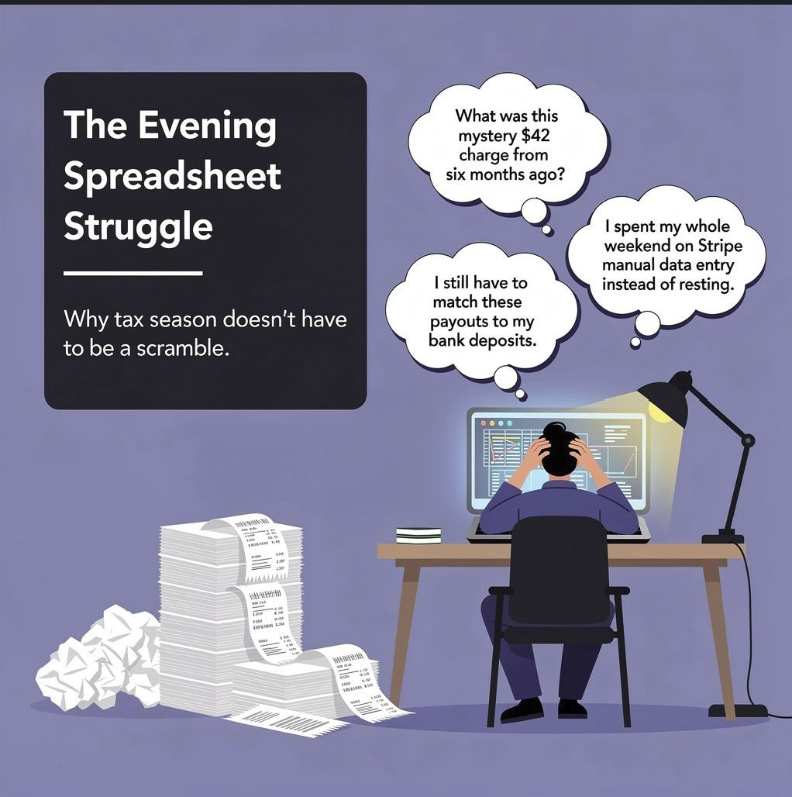

The Evening Spreadsheet Struggle

If you run a business, your days are already full: sales, service delivery, keeping clients happy. For too many owners the hardest shift starts when the workday ends, staring at spreadsheets, hunting down loose receipts, trying to make sense of bank records late into the evening.
That isn't just exhausting. It's financially risky. Disorganised records lead straight to missed deductions, late filing penalties, CRA interest charges, and expensive emergency year-end accounting cleanups.
1. Shoebox syndrome
Every year starts with good intentions. A neat folder on the desktop, a bookmarked accounting app, a promise to stay on top of receipts every Friday. Then reality arrives: deadlines stack up, clients call with urgent demands, and receipts end up on truck dashboards, in glove compartments, or buried under unread digital invoices.
By the time you notice, bookkeeping has stopped being something you use to make decisions. It's a Sunday-night reconstruction project, fighting a spreadsheet at 10pm, trying to remember what a mystery $42 charge from six months ago was for.
2. The manual data-entry grind
Doing it by hand means endless browser tabs, squinting at badly lit phone photos, guessing missing vendor names, and keying values one line at a time. It is tedious, draining, repetitive work, and it scales badly in both directions: too little and your books are wrong, too much and you lose your evenings.
3. The bank feed disconnect
Many owners assume automation has solved this. Accounting software encourages that assumption, but a bank feed is not bookkeeping.
If there's even a minor variance, automation misclassifies or misses the transaction entirely. You log in and find mystery balances sitting in a holding account, or transfer entries you don't know how to code. You spend hours playing detective on why a Stripe payout doesn't match the customer's invoice total, because processing fees were deducted along the way.
And when a service simply clicks "accept" on raw bank transactions without attaching a vendor or asking for the receipt, it builds books that look tidy and collapse under a CRA review.
4. The zero-dollar hours
Here is the core truth: you did not start a business to do data entry.
When a founder spends four hours late at night matching receipts to a ledger, those hours earn nothing. The same four hours could go to following up warm leads, delivering higher-value client work, or resting without guilt. Offloading the back end is not an added expense. It's buying back your most valuable asset.
5. Five ways a bookkeeper pays for themselves
- Recovering uncollected receivables. When books are behind, owners lose track of who owes them. Aged A/R tracking surfaces unpaid and missing sales invoices that otherwise sit forgotten.
- Avoiding expensive year-end cleanup. Hand messy records to a CPA at tax time and they bill hourly to reconstruct the year. Structured monthly bookkeeping means that work is already done.
- Catching merchant fee discrepancies. Bank-feed software often records gross payouts and ignores deducted platform fees. Miss the fee split and you over-report revenue, then pay income tax on money you never received.
- Staying ahead of CRA interest and penalties. Catching missing receipts and categorising transactions monthly keeps books audit-ready all year, rather than defended in hindsight.
- Reclaiming your own time. Ten to fifteen hours a month on admin is time that generates no revenue. Delegating it is how you spend those hours on work that does.
6. What a proper bookkeeping partnership does
- Custom double-entry logic. A Chart of Accounts built for your business, with monthly bank reconciliations, so discrepancies surface immediately instead of at year end.
- Receipt and vendor matching. Every transaction matched to its supporting document and vendor name, so nothing in your books is an unexplained number. Section 7 walks through exactly how that works.
- No system overhaul. Whether your sales run through QuickBooks, Xero, Stripe, Shopify or a social checkout link, we work inside the tools you already use.
- Direct communication. No ticket queues, no rotating account team. Track updates in your client dashboard, or reach a direct WhatsApp line.
7. How receipt and invoice capture actually works
This is the part most bookkeeping services skip, and it is the difference between books that survive a review and books that only look tidy.
What you do. Send documents however they arrive. Snap the paper receipt on your phone. Forward the supplier's invoice email. Upload a scanned PDF through your client dashboard. Or hand over the whole shoebox at month end. There is no naming convention, no folder structure to maintain, and no spreadsheet to fill in.
What happens next, in order:
- The document is read. Every receipt and invoice is scanned and the key fields are pulled out automatically: vendor, date, total, tax, and line items where they matter. Your bank feed tells you that $84.19 left the account. This tells you what it bought.
- The figures are checked before anything reaches your books. Each extracted amount is validated against the document itself, then against the transaction it claims to be. Missing fields, totals that don't reconcile, dates outside the period, and anything that looks like a duplicate get flagged, not quietly posted.
- It is matched to the bank line. Each receipt is tied to the transaction that paid for it. That is what stops Stripe payouts sitting as unexplained balances in a holding account, and what catches the platform fees deducted before the money reached you.
- Anything uncertain comes to you. You get the flagged item with the document attached: one click to approve, one click to reject. You are not asked to review the majority that read cleanly, which is the entire point.
- It posts with the receipt attached. Approved items land in your accounting software as bills or expenses with the supporting document linked, and every step is logged. When a CRA reviewer asks what a $42 charge was for, the answer is a click away rather than a shoebox.
Why it matters more than the automation you already have. Accepting a bank feed transaction takes two seconds and records nothing. You end up with a number and no supporting document, which is exactly what falls apart under review. Receipt capture is what turns "money left the account" into "this was a deductible business expense, in this category, with the tax recorded correctly".
8. Published, fixed pricing
No surprise hourly charges, no emergency cleanup bills.
- Starter, $150 CAD/mo: up to 50 transactions
- Standard, $300 CAD/mo: up to 150 transactions
- Growth, $450 CAD/mo: up to 300 transactions
- Custom volume: quoted up front after a consultation
9. What working together looks like
Your client dashboard opens from day one, so you can see the work happening. You get simple monthly Profit & Loss updates, clear cash-flow tracking, and a direct line when you need one. No anonymous queues, and no wondering what is going on behind the scenes.